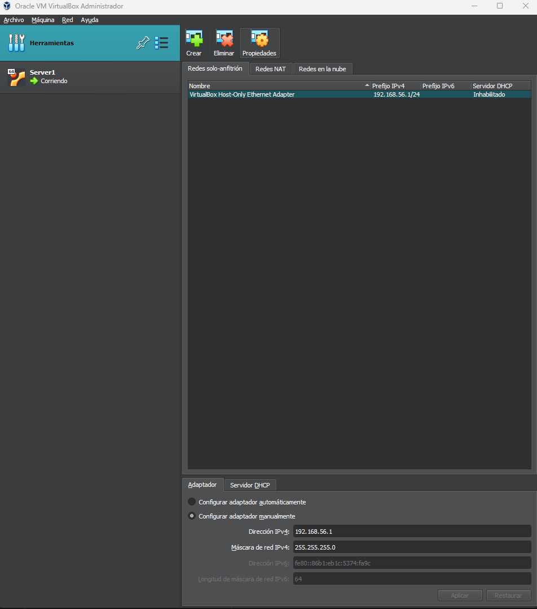

1. El Administrador de Red del Anfitrión
A diferencia de la pestaña "Red" de cada máquina virtual (que configura la tarjeta individual), el Administrador de red del anfitrión de VirtualBox actúa como el centro de control de switches y routers virtuales compartidos entre todas las máquinas del hipervisor.

🔍 Creación y configuración de un nuevo adaptador de red en VirtualBox (clic para ampliar)
2. Tipos de Redes Gestionadas Globalmente
Redes de Solo-Anfitrión (Host-Only Networks)
Crea un adaptador virtual en tu sistema operativo (visible en Windows como VirtualBox Host-Only Ethernet Adapter o en macOS/Linux como vboxnet0). Funciona como un switch privado donde el anfitrión tiene la IP 192.168.56.1 y las VMs se conectan a él.
✦ Casos de Uso
Desarrollo local aislado, comunicación SSH estable sin depender de la Wi-Fi y entornos de pruebas cliente-servidor seguros.
✦ Buenas Prácticas
Desactivar el servidor DHCP integrado si vas a fijar IPs estáticas con Netplan para evitar solapamientos.
Redes NAT (NAT Networks)
Un router virtual compartido con salida a Internet. Todas las máquinas virtuales conectadas a la misma Red NAT (por ejemplo, NatNetwork en 10.0.2.0/24) pueden enviarse paquetes entre sí y navegar a Internet.
✦ Casos de Uso
Simular clusters de Big Data (Hadoop, Spark, Kafka) que necesitan comunicarse entre sí y descargar librerías o dependencias de Internet.
✦ Reenvío de Puertos
Permite configurar reglas de Port Forwarding globales para exponer servicios del cluster hacia el anfitrión.
Servidor DHCP Integrado de VirtualBox
VirtualBox incorpora un demonio DHCP ligero capaz de asignar direcciones IP dinámicas dentro de cualquier red Solo-Anfitrión o Red NAT.
| Parámetro DHCP | Valor Típico Recomendado | Significado |
|---|---|---|
| Dirección del Servidor | 192.168.56.100 |
IP del demonio DHCP virtual |
| Máscara de red | 255.255.255.0 (/24) |
Tamaño de la subred privada |
| Límite inferior | 192.168.56.101 |
Primera IP que entrega dinámicamente |
| Límite superior | 192.168.56.254 |
Última IP del pool dinámico |
3. Recomendación para Sistemas Big Data
En estaciones de trabajo normales, DHCP es muy cómodo. Pero en **servidores y nodos de Big Data** (bases de datos Postgres, brokers de Kafka, workers de Spark), **las IPs deben ser estáticas e inmutables**. Si la IP cambia tras un reinicio, todos los ficheros de configuración (`zoo.cfg`, `server.properties`, cadenas de conexión JDBC) se rompen. Por eso, en nuestros laboratorios **desactivamos el DHCP en VirtualBox** y fijamos la IP con Netplan.